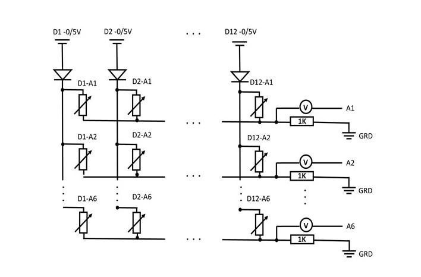
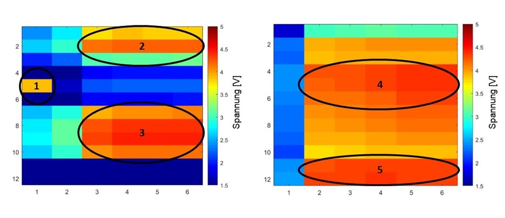
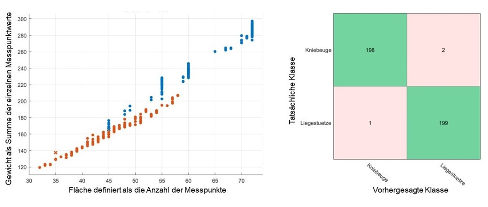
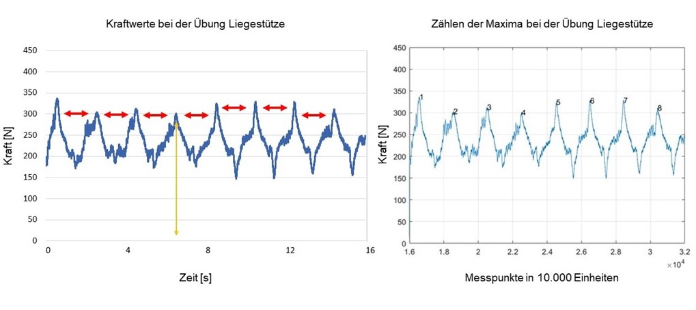

The automated tracking of exercise routines is a challenge for athletes. There are hardly any reliable ways to automatically track bodyweight exercises. Therefore, this project aimed to develop a sensor system that enables the tracking of exercises. Based on the sensor data, I was able to design a machine learning algorithm that automatically classified exercises and quantified repetitions.
After some research, we decided to build a pressure sensor mat. Via the microcontroller we were able to query a matrix of corresponding pressure values. These values could be queried by the sensor for the entire mat at a certain frequency, so that we could display the pressure changes over time.
My tasks: (Tools)
Overview about the electrical circuit:

Visualization of the measured pressure values (voltage):

I developed a ML algorithm in Matlab that classified the pressure values into corresponding exercise types. Therefore we used the different area of an exercise combined with the pressure values. I then applied a kNN-algorithm for the classification and received a 99,3% accuracy for the classification of two different exercises. In the following you can see the predicted class in a scatter plot and a confusion matrix:

Finally I quantified the exercise repetitions using an algorithm to count the peak values of the recorded pressure data:
